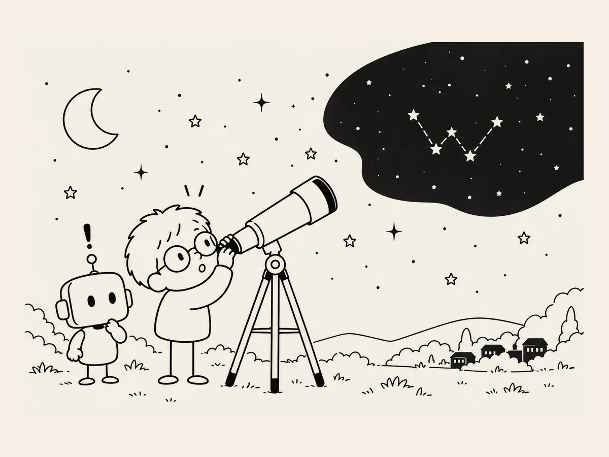

9.
Cassiopeia Was Crooked All Along.
I added more stars to the background.
Soon the sky was packed with them.
Then a thought occurred to me.
Wouldn't it be nice to have a constellation in there?
A mother could look at the picture with her baby before bedtime and say,
"That's Cassiopeia."
I asked AI.
"Can you add the Cassiopeia constellation?"
It said it could.
"Then draw Cassiopeia."
It did.
Hmm.
A crooked W.
"No, I don't think that's right."
Then I thought about it again.
Having just one constellation in there looked a little strange anyway.
And there wasn't really any need to show constellations before bedtime.
"Let's get rid of the constellation."
A few days later, I happened to see a picture of the constellations.
Huh?
There was Cassiopeia.
A crooked W.
AI was right.
